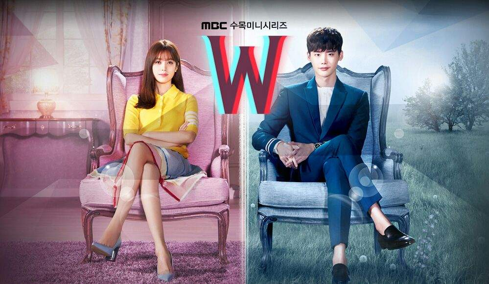
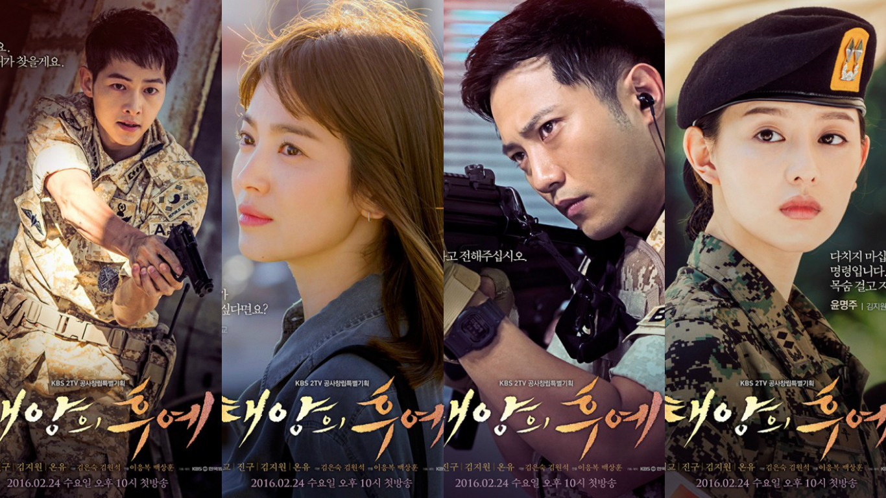

W: IN TWO WORLDS
 W (en hangul, 더블유) es una serie de televisión surcoreana de 2016, protagonizada por Lee Jong-suk y Han Hyo-joo.Consta de 16 episodios, se emitió los miércoles y jueves a las 22:00 ( KST ) en MBC del 20 de julio al 14 de septiembre de 2016. W se centra en el choque entre "dos mundos": el mundo real y un universo alternativo dentro de un webtoon , del que se tomó el título de la serie de televisión. La serie recibió elogios por su premisa única y ocupó el primer lugar en Content Power Index en su semana de estreno. Logró calificaciones modestas de 11.63%, superando las calificaciones de audiencia en su franja horaria durante toda su carrera. La cirujana cardiotorácico de segundo año del hospital Myungse, Oh Yeon Joo (Han Hyo Joo), sufre la desaparición de su padre Oh Sung Moo (Kim Eui Sung), que es un famoso escritor de webtoons, misteriosamente tras escribir el último capítulo de su obra maestra W, protagonizada por Kang Cheol (Lee Jong Suk), que en la historia es vicepresidente de JN Global, el propietario del canal de televisión W, y además es medallista olímpico en tiro. La historia da un giro cuando Yeon Joo decide buscar a su padre y se encuentra con el ficticio Kang Chul en persona, herido y al borde de la muerte. Ella salva a Kang Chul, entrando en un mundo ficticio, comenzado una historia de amor, el problema es que ella no existe en la realidad de Kang Chul, y él tampoco existe en la realidad de ella, generando dos mundos paralelos.
 Descendientes del sol (en hangul, 태양의 후예) es una serie de televisión surcoreana de acción y drama médico emitida por KBS 2TV desde el 24 de febrero hasta 14 de abril de 2016. Esta basada en el romance entre un soldado del ejército surcoreano y una doctora voluntaria de un equipo médico, que juntos hacen patria, defienden y auxilian a la gente en medio de un ficticio país llamado Uruk, devastado por una crisis humanitaria, tras el término de un conflicto armado a gran escala y un terremoto que destruye el trabajo de las tropas surcoreanas. Con 16 episodios y tres especiales, la serie es protagonizada por Song Joong Ki conocido anteriormente por su papel en Sungkyunkwan Scandal (2010), Song Hye Kyo en Full House (2004), Jin Goo en Enamorándose de la inocencia (2015) y Kim Ji Won de The Heirs (2013). Transmitida en su país de origen por KBS 2TV en el horario de los miércoles y jueves a las 21:55 (KST), reemplazando en el segmento a The Merchant: Gaekju 2015. Durante su periodo de emisión y posteriormente, Descendientes del sol fue un éxito rotundo tanto localmente como gran parte del mundo, registrando importantes cifras de audiencia en televisión y en internet más de dos mil millones de espectadores vía streaming. El éxito inicial provocó que se lograse exportar aun estando al aire en el sexto episodio a 27 países. Asimismo, su trama fue alabada en declaraciones de la entonces presidenta surcoreana Park Geun Hye e incluso el primer ministro tailandés Prayut Chan-o-cha que llamó a su nación a ver la serie.